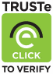

Tanggal Revisi Terakhir: 11 Juni 2015
Istilah yang dipergunakan dalam Kebijakan Privasi dan Standar Keamanan DompetSehat memiliki perngertian yang sama dengan istilah yang dipergunakan dalam Ketentuan Penggunaan DompetSehat.com, kecuali yang secara tegas diistilahkan lain dalam Kebijakan Privasi dan Standar Keamanan DompetSehat.
Dalam DompetSehat.com, hal yang menjadi perhatian utama DompetSehat adalah hubungan berkelanjutan antara DompetSehat dengan Anda.
DompetSehat berkomitmen untuk selalu menjaga kerahasiaan, integritas dan keamanan setiap informasi yang dapat mengidentifikasi Anda secara pribadi, baik nama lengkap, nomor telfon, nomor faksimili, alamat rumah atau alamat penagihan, alamat email ( selanjutnya disebut “Informasi Pribadi”) milik Pengguna Dalam Kebijakan Privasi & Standar Keamanan ini akan dijelaskan bagaimana DompetSehat melindungi Informasi Pribadi yang diberikan melalui DompetSehat.com dan bagaimana DompetSehat menggunakan informasi tersebut sebagai bagian dari Pelayanan DompetSehat
DompetSehat menekankan bahwa standar utama dalam kebijakan ini adalah untuk melindungi Anda dari pencurian identitas, dan memberikan keamanan terhadap data – data pribadi Anda. DompetSehat secara berkala akan meng-evaluasi kembali Kebijakan Privasi & Standar Keamanan ini supaya dapat beradaptasi dengan perubahan – perubahan dan dinamika yang terjadi dikemudian hari.

DompetSehat saat ini belum tersertifikasi melalui TRUSTe Web Privacy Seal Program, karena masih dalam tahap Pre-Alpha dan Alpha Release, namun DompetSehat akan segera mengambil sertifikasi ini untuk menjaga data pribadi Anda.
DompetSehat tidak dan tidak akan pernah menyebarluaskan Informasi Pribadi Anda kepada pihak manapun dengan cara apapun dengan alasan apapun baik dengan imbalan atau tanpa imbalan.DompetSehat menggunakan dan memberikan Informasi Pribadi Anda hanya untuk keperluan sebagai berikut :
Dalam hal Anda mengakses Pelayanan DompetSehat yang disajikan terhadap Anda melalui salah satu partner co-branding DompetSehat, melalui sebuah URL co-branded, alamat email yang digunakan untuk registrasi tersebut akan diberikan kepada partner co-branded tersebut.
Terdapat area dan fitur tertentu dalam DompetSehat.com yang dapat Anda gunakan tanpa harus melakukan registrasi terlebih dahulu. Namun, beberapa fitur yang lain dalam DompetSehat.com atau Pelayanan DompetSehat yang diberikan, akan membutuhkan registrasi, dimana Anda harus memberikan informasi kepada DompetSehat termasuk alamat username, email, password, kode pos untuk berpartisipasi dalam forum DompetSehat, (selanjutnya secara bersama-sama disebut “Informasi Registrasi”).Hal ini diperlukan supayaAgar Anda dapat menggunakan keseluruhan Pelayanan DompetSehat yang DompetSehat disediakan, Anda juga diharuskan memberikan informasi Credential yang diperlukan untuk mengakses website institusi keuangan ( selanjutnya disebut “Informasi Akun”) sehingga DompetSehat.com dapat mengakses dan mengunduh Informasi Pribadi dan data keuangan milik Anggota yang dikelola oleh institusi keuangan ( Informasi Pribadi dan data keuangan yang dikelola oleh institusi keuangan yang selanjutnya disebut “Informasi Institusi Keuangan”) untuk kepentingan Anda, ( kegiatan mengunduh Informasi Pribadi dan data keuangan pada institusi keuangan itu sendiri selanjutnya disebut “Agregasi”
Dari waktu ke waktu,DompetSehat akan meminta Anda memberikan informasi tambahan supaya DompetSehat dapat memberikan Pelayanan DompetSehat dan benefit tambahan lainnya.Anda akan diberi kesempatan apakah menyetujui atau menolak, untuk memberikan informasi tersebut, dan informasi tersebut hanya akan dipergunakan sesuai dengan tujuan yang telah dituliskan. DompetSehat hanya akan melakukan gregasi anonim ( tidak bernama ) terhadap Informasi Pribadi dan pemberian data – data tersebut, namun hanya untuk keperluan dimana hal tersebut tidak dapat mengidentifikasi Anda secara personal,antara lain :
Informasi – informasi tersebut tidak akan mengindentifikasi Anda secara individu.Pengaksesan terhadap Informasi Registrasi, Informasi Akun, Informasi Institusi Keuangan, dan Informasi Pribadi lainnya yang telah Anda berikan kepada DompetSehat,akan diberlakukan prosedur protokoler yang ketat untuk dapat mengaksesnya. Pihak atau staff yang bertanggung jawab terhadap hal tersebut, telah dipilih berdasarkan standar kebijakan DompetSehat, dan berkewajiban untuk selalu menjaga kerahasiaannya. Mereka akan menandatangani Perjanjian Kerahasiaan dan akan mendapatkan sanksi disiplin, termasuk pemberhentian kerja serta ancaman tindak pidana, apabila terbukti gagal dalam melaksanakan kewajiban mereka.
DompetSehat juga akan menggunakan vendor pihak ketiga untuk membantu DompetSehat memberikan Pelayanan DompetSehat kepada Anda, misalnya mengirimkan email atas nama DompetSehat, atau menyediakan dan mengoperasikan fitur – fitur tertentu, atau fungsi dari Pelayanan DompetSehat. Kontrak DompetSehat terhadap mereka secara garis besar menyatakan bahwa mereka tidak diperbolehkan menggunakan Informasi Pribadi Anda untuk tujuan – tujuan yang tidak berhubungan dengan produk ataupun jasa yang mereka berikan. DompetSehat membutuhkan jasa pihak ketiga tersebut supaya dapat menjaga kerahasiaan data yang DompetSehat berikan kepada mereka.
Jika terdapat perubahan terhadap Informasi Registrasi Anda ketika melakukan pendaftaran, maka Anda dapat memperbaharui Informasi Registrasi melalui Pelayanan
Ketika Anda mengunjungi DompetSehat.com, DompetSehat akan mengumpukan informasi – informasi yang bersifat teknis dan navigasional, seperti misalnya, tipe browser yang digunakan, alamat IP, halaman – halaman yang dikunjungi, dan waktu rata – rata yang anda habiskan di DompetSehat.com DompetSehat. Informasi ini akan digunakan, sebagai contoh, untuk memberitahu Anda adanya ketidakcocokan software, atau digunakan sebagai dasar analisa DompetSehat untuk meningkatkan desain dan fungsionalitas website.
“Cookies” adalah alat pengidentifikasi alfanumerik dalam bentuk file text yang dimasukkan dan disimpan oleh Web Browser kedalam hard drive komputer Anda. DompetSehat mungkin akan mengakses cookies dalam komputer Anda untuk menelusuri dan menyimpan informasi preferensi yang telah Anda lakukan. DompetSehat akan mengumpulkan informasi tentang Anda melalui teknologi cookie. Contohnya, DompetSehat bisa memberikan cookie kepada Anda, untuk membatasi seberapa banyak jumlah tawaran DompetSehat.com yang akan ditawarkan kepada Anda. Sebelumnya, harap diketahui bahwa beberapa Browser Internet dapat secara otomatis menghentikan penyimpanan dan melakukan penghapusan cookies yang tersimpan dalam komputer Anda. Jika Anda memutuskan untuk menghapus semua cookies tersebut, maka penawaran yang Dompetsehat.com berikan kepada Anda menjadi tidak terfilter sesuai dengan karakteristik preferensi Anda.
DompetSehat menyandikan cookie tersebut DompetSehat sehingga yang dapat adalah hanya DompetSehat. hanya Dompetsehat yang dapat membacanya.
Web Beacons adalah gambar yang tertanam dalam halaman Web atau email, dengan tujuan untuk mengukur dan menganalisa penggunan dan aktifitas DompetSehat.com.DompetSehat, atau provider pihak ketiga yang bertindak atas nama DompetSehat, diperbolehkan menggunakan Web Beacons untuk membantu DompetSehat dalam menganalisa penggunaan DompetSehat.com dan untuk meningkatkan Pelayanan DompetSehat.
Kemungkinan DompetSehat juga akan menggunakan jasa pihak ketika untuk mempermudah DompetSehat dalam menganalisa kegiatan online tertentu. Misalnya, jasa tersebut bisa membantu DompetSehat dalam mengukur performa dari kampanye online DompetSehat, atau aktifitas pengunjung dalam DompetSehat.com. Kemungkinan DompetSehat akan memberikan ijin pada penyedia jasa tersebut untuk mengakses cookies dan teknologi lainnya, supaya dapat memberikan jasanya terhadap DompetSehat.DompetSehat tidak akan memberikan Informasi Pribadi apapun tentang Pengguna DompetSehat dengan provider pihak ketiga tersebut, dan povider jasa pihak ketiga tersebut tidak akan mengumpulkan informasi – informasi semacam itu dengan mengatasnamakan DompetSehat. Jasa pihak ketika tersebut diharuskan mematuhi dan melaksanakan secara penuh Kebijakan Privasi & Standar Keamanan yang tertulis disini.
DompetSehat bekerjasama dengan pihak ketiga sehubungan dengan penawaran produk dan jasa yang ditawarkan oleh pihak ketiga melalui DompetSehat.com dalam Pelayanan DompetSehat ( “Penawaran DompetSehat”),Sebelum Anda memutuskan untuk menggunakan produk – produk dan jasa yang ditawarkan oleh pihak ketiga tersebut, maka Anda harus membaca aturan mengenai pemberian informasi, atau pemberian ijin untuk mengambil informasi tentang Anda yang , diatur dalam kebijakan privasi pihak ketiga dan . Anda harus mengevaluasi praktek seperti apa yang mereka lakukan sebelum memutuskan untuk menggunakan jasa mereka. DompetSehat tidak bertanggung jawab terhadap kebijakan privasi yang diterapkan oleh pihak ketiga. DompetSehat memberikan tautan yang telah dimodifikasi sedemikian rupa, supaya DompetSehat dapat menelusuri apakah tautan tersebut telah diikuti, atau apakah terdapat tindakan tertentu yang dilakukan di website pihak ketiga tersebut.DompetSehat menggunakan informasi ini untuk meningkatkan kualitas penawaran DompetSehat dan konten dalam Pelayanan DompetSehat.
Ketika Anda menggunakan bulletin board, blog atau chat room dalam DompetSehat.com Anda harus menyadari bahwa semua informasi yang Anda berikan dapat terbaca, diambil atau digunakan oleh Pengguna yang lain, dan dapat digunakan untuk mengirimi Anda pesan – pesan yang tidak diinginkan.DompetSehat tidak bertanggung jawab terhadap segala informasi yang Anda berikan dalam forum – forum tersebut. Forum tersebut bisa saja dikelola oleh DompetSehat maupun provider pihak ketiga dengan atas nama DompetSehat.
Dari waktu ke waktu, DompetSehat.com mungkin akan memberi kesempatan bagi Anda untuk berpartisipasi dalam kontes, hadiah atau promosi – promosi lainnya. Semua informasi yang tersimpan dalam aktifitas tersebut akan diperlakukan sama seperti kebijakan privasi ini, kecuali sebelumnya ditentukan lain dalam peraturan Kontes, Hadiah dan Promosi tersebut. DompetSehat juga akan meminta Anda untuk mengisi survey yang didesain untuk membantu DompetSehat dalam meningkatkan performa DompetSehat.com DompetSehat. Segala informasi yang Anda berikan kepada DompetSehat dalam survey apapun hanya akan digunakan dalam hal yang berhubungan dengan survey tersebut sebagaimana telah dituliskan dalam kebijakan ini.
Dengan menyetujui Kebijakan Privasi dan Standar Keamanan ini, Anda telah memberikan persetujuan kepada DompetSehat untuk mengungkap Informasi Pribadi, Informasi Registrasi, Informasi Akun, dan Informasi Institusi Keuangan dalam hal diminta oleh pihak yang berwenang sehubungan dengan proses peradilan atau proses hukum lainnya yang menurut peraturan perundang-undangan yang berlaku diwajibkan untuk memberikan keterangan Permintaan dari pihak yang berwenang tersebut wajib dibuktikan oleh DompetSehat.
Informasi Pribadi Anda kemungkinan akan dipindah tangankan kepada pihak lain sebagai akibat dari penggabungan, peleburan, pemisahan, atau pengambilalihan perusahaan, , perubahan organisasi atau perubahan kontrol lainnya.Dalam hal DompetSehat melakukan penggabungan, peleburan, pemisahan, atau pengambilalihan bagian apapun dalam bisnis DompetSehat, Informasi Pribadi Anda mungkin akan menjadi bagian dari penggabungan, peleburan, pemisahan, atau pengambilalihan tersebut.Jika demikian, DompetSehat akan menginformasikan kepada Anda dan Anda akan diberi pilihan apakah akan terus menggunakan Pelayanan Dompetsehat atau menghentikannya terjadi penggabungan, peleburan, pemisahan, atau pengambilalihan DompetSehat.
Data Anda adalah milik Anda. Anda dapat menghapusnya kapanpun. Ketika Anda meminta DompetSehat untuk menghapusnya dari Pelayanan DompetSehat, data Anda akan secara permanen dicoret dari database server produksi DompetSehat, dan akses terhadap data tersebut dikemudian hari tidak akan bisa dilakukan.DompetSehat juga sebelumnya akan memutuskan semua koneksi yang telah dilakukan terhadap semua Informasi Institusi Keuangan, dan menghapus semua Informasi Akun milik Anda. Namun demikian, sebagian kecil dari data Anda, yang terdiri dari data Agregasi anonim yang diambil dari Informasi Institusi Keuangan Anda, akan tetap berada di server produksi DompetSehat dengan waktu yang tak terbatas. Kemungkinan data Agregasi Anda juga akan tetap tersimpan dalam server cadangan DompetSehat. DompetSehat akan tetap menyimpan cadangan tersebut untuk memastikan DompetSehat akan secara berkelanjutan tetap dapat menyediakan Pelayanan DompetSehat, jika pada suatu hari terjadi kerusakan atau kegagalan dalam sistem utama server produksi DompetSehat juga masih tetap berhak untuk menggunakan data hasil agregasi,anonim yang diambil dari kegiatan online Anda.
Anggota DompetSehat akan diberi rangkuman mingguan dari Informasi Institusi Keuangan dan sebuah Pemberitahuan via Email.DompetSehat juga akan memberikan newsletters, dan dari waktu ke waktu, mungkin akan mengandung isi yang berisi promosi dari DompetSehat dan barang dan jasa dari pihak ketiga.
Subscriber email dari DompetSehat.com akan dapat melepaskan diri dari email – email promosi DompetSehat dan menon-aktifkan langganan newsletters nya dengan cara mengikuti petunjuk yang terdapat di dalam email.Namun penghentian layanan ini tidak akan menghentikan keseluruhan transmisi yang menggunakan email lainnya, misalnya Email Alerts.
DompetSehat menggunakan kombinasi penghalang Firewall, teknik enkripsi dan prosedur otentikasi, dan yang lainnya, untuk memastikan keamanan dari aktifitas online Anda, dan untuk melindungi akun dan sistem DompetSehat.com dari akses yang tidak diizinkan.
Ketika Anda melakukan pendaftaran, DompetSehat akan meminta password dan one time password ( Captcha ) untuk keamanan dan privasi Anda. DompetSehat.com akan men- transmit data tersebut keserver DompetSehat dengan cara yang sangat aman.
Server DompetSehat berada pada fasilitas yang sangat aman.Akses terhadap database membutuhkan berbagai level dan protokol otentifikasi, termasuk prosedur pengenalan biometrik.Dompetsehat juga mempekerjakan personel keamanan yang memonitor sistem dan infrastruktu Dompetsehat selama 24 jam sehari, 7 hari dalam seminggu.
Database DompetSehat dilindungi dari karyawan DompetSehat sendiri, baik secara fisik maupun secara intelektual.DompetSehat mengenkripsi password Anda, sehingga password tersebut tidak bisa di-recover kembali, bahkan oleh DompetSehat sendiri. Semua media untuk backup juga ter-enkripsi. DompetSehat melakukan kontrol akses fisik terhadap gedung DompetSehat sendiri.
Tidak ada satu karyawan pun yang diperbolehkan untuk memasukkan konten – konten sensitif ke dalam perangkat komputer yang tidak aman atau mengambil data dari database untuk dimasukkan ke dalam perangkat komputer yang tidak aman.
Saat ini DompetSehat akan segera di verifikasi oleh Verisign untuk penggunaan teknologi enkripsi SSL, dan akan diaudit oleh TRUSTe dalam praktek privasinya. Sebagai tambahan,
DompetSehat melakukan tes harian pada titik – titik rawan yang menyebabkan kegagalan dan kemungkinan terjadinya penyusupan oleh hacker.
Namun demikian, tetaplah penting untuk memahami bahwa semua hal tersebut adalah langkah – langkah pecegahan yang diaplikasikan dalam DompetSehat dan sistem DompetSehat.com. DompetSehat tidak memiliki kontrol terhadap bagaimana pihak ketiga menyimpan, mengelola ataupun menampilkan informasi tersebut dalam websitenya.
Dari saat Anda memberikan Login ID dan Password, komunikasi antara komputer Anda dengan DompetSehat.com telah ter-enkripsi. Hal ini didesain untuk membuat komunikasi antara komputer Anda dengan server menjadi sangat aman, untuk menghindari pihak – pihak yang mencuri dengar dan pencurian informasi yang Anda berikan kepada DompetSehat.
DompetSehat memberikan peraturan yang sangat ketat, hal ini supaya orang tidak bisa dengan mudah menebak password Anda. DompetSehat juga menganjurkan supaya Anda mengganti password secara berkala. Password Anda harus sebanyak 6 – 16 karakter yang terdiri dari gabungan huruf dan angka. Anda bertanggung jawab menjaga keamanan Login ID dan Password tersebut. Anda tidak diperbolehkan memberikan informasi tersebut kepada pihak manapun. Jika Anda merasa bahwa informasi tersebut telah tercuri, Anda harus dengan segera menghubungi DompetSehat di security@dompetsehat.com, namun jika bisa segeralah mengganti password Anda melalui Pelayanan DompetSehat. DompetSehat tidak dapat bertanggung jawab jika orang lain mengakses akun Anda melalui Informasi Registrasi yang dia dapat sendiri dari Anda, atau karena Anda telah melakukan pelanggaran terhadap kebijakan KebijakanKebijakan Privasi & Standar Keamanan atau Kketentuan Penggunaan penggunPelayanan DompetSehat.com Jika Anda memiliki permasalahan yang berhubungan dengan security, hubungi DompetSehat di security@dompetsehat.com DompetSehat akan bekerja dengan maksimal untuk merespon permasalahan Anda.
DompetSehat akan terus melakukan perubahan terhadap Kebijakan Privasi & Standar Keamanan ini secara berkala. Tanggal revisi terakhir terletak di kiri atas. Perubahan akan menjadi efektif saat materi tersebut diunggah.
Jika Anda memiliki pertanyaan, komentar, permasalahan ataupun umpan balik yang berhubungan dengan Kebijakan Privasi & Standar Keamanan ini atau hal lain yang berhubungan dengan privasi dan keamanan, kirimkan email ke security@dompetsehat.com